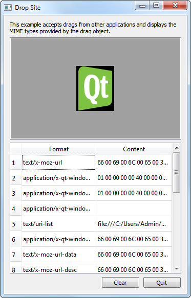

Drop Site Example
The example shows how to distinguish the various MIME formats available in a drag and drop operation.

The Drop Site example accepts drops from other applications, and displays the MIME formats provided by the drag object.
There are two classes, DropArea and DropSiteWindow, and a main() function in this example. A DropArea object is instantiated in DropSiteWindow; a DropSiteWindow object is then invoked in the main() function.
DropArea Class Definition
The DropArea class is a subclass of QLabel with a public slot, clear(), and a changed() signal.
class DropArea : public QLabel { Q_OBJECT public: explicit DropArea(QWidget *parent = nullptr); public slots: void clear(); signals: void changed(const QMimeData *mimeData = nullptr);
In addition, DropArea contains reimplementations of four QWidget event handlers:
These event handlers are further explained in the implementation of the DropArea class.
protected: void dragEnterEvent(QDragEnterEvent *event) override; void dragMoveEvent(QDragMoveEvent *event) override; void dragLeaveEvent(QDragLeaveEvent *event) override; void dropEvent(QDropEvent *event) override; };
DropArea Class Implementation
In the DropArea constructor, we set the minimum size to 200x200 pixels, the frame style to both QFrame::Sunken and QFrame::StyledPanel, and we align its contents to the center.
DropArea::DropArea(QWidget *parent) : QLabel(parent) { setMinimumSize(200, 200); setFrameStyle(QFrame::Sunken | QFrame::StyledPanel); setAlignment(Qt::AlignCenter); setAcceptDrops(true); setAutoFillBackground(true); clear(); }
Also, we enable drop events in DropArea by setting the acceptDrops property to true. Then, we enable the autoFillBackground property and invoke the clear() function.
The dragEnterEvent() event handler is called when a drag is in progress and the mouse enters the DropArea object. For the DropSite example, when the mouse enters DropArea, we set its text to "<drop content>" and highlight its background.
void DropArea::dragEnterEvent(QDragEnterEvent *event) { setText(tr("<drop content>")); setBackgroundRole(QPalette::Highlight); event->acceptProposedAction(); emit changed(event->mimeData()); }
Then, we invoke acceptProposedAction() on event, setting the drop action to the one proposed. Lastly, we emit the changed() signal, with the data that was dropped and its MIME type information as a parameter.
For dragMoveEvent(), we just accept the proposed QDragMoveEvent object, event, with acceptProposedAction().
void DropArea::dragMoveEvent(QDragMoveEvent *event) { event->acceptProposedAction(); }
The DropArea class's implementation of dropEvent() extracts the event's mime data and displays it accordingly.
void DropArea::dropEvent(QDropEvent *event) { const QMimeData *mimeData = event->mimeData();
The mimeData object can contain one of the following objects: an image, HTML text, Markdown text, plain text, or a list of URLs.
if (mimeData->hasImage()) {
setPixmap(qvariant_cast<QPixmap>(mimeData->imageData()));
} else if (mimeData->hasFormat(u"text/markdown"_s)) {
setText(QString::fromUtf8(mimeData->data(u"text/markdown"_s)));
setTextFormat(Qt::MarkdownText);
} else if (mimeData->hasHtml()) {
setText(mimeData->html());
setTextFormat(Qt::RichText);
} else if (mimeData->hasText()) {
setText(mimeData->text());
setTextFormat(Qt::PlainText);
} else if (mimeData->hasUrls()) {
QList<QUrl> urlList = mimeData->urls();
QString text;
for (qsizetype i = 0, count = qMin(urlList.size(), qsizetype(32)); i < count; ++i)
text += urlList.at(i).path() + u'\n';
setText(text);
} else {
setText(tr("Cannot display data"));
}
- If
mimeDatacontains an image, we display it inDropAreawith setPixmap(). - If
mimeDatacontains HTML, we display it with setText() and setDropArea's text format as Qt::RichText. - If
mimeDatacontains Markdown, we display it with setText() and setDropArea's text format as Qt::MarkdownText. - If
mimeDatacontains plain text, we display it with setText() and setDropArea's text format as Qt::PlainText. In the event thatmimeDatacontains URLs, we iterate through the list of URLs to display them on individual lines. - If
mimeDatacontains other types of objects, we setDropArea's text, with setText() to "Cannot display data" to inform the user.
We then set DropArea's backgroundRole to QPalette::Dark and we accept event's proposed action.
setBackgroundRole(QPalette::Dark);
event->acceptProposedAction();
}
The dragLeaveEvent() event handler is called when a drag is in progress and the mouse leaves the widget.
void DropArea::dragLeaveEvent(QDragLeaveEvent *event) { clear(); event->accept(); }
For DropArea's implementation, we clear invoke clear() and then accept the proposed event.
The clear() function sets the text in DropArea to "<drop content>" and sets the backgroundRole to QPalette::Dark. Lastly, it emits the changed() signal.
void DropArea::clear() { setText(tr("<drop content>")); setBackgroundRole(QPalette::Dark); emit changed(); }
DropSiteWindow Class Definition
The DropSiteWindow class contains a constructor and a public slot, updateFormatsTable().
class DropSiteWindow : public QWidget { Q_OBJECT public: DropSiteWindow(); public slots: void updateFormatsTable(const QMimeData *mimeData); void copy(); private: DropArea *dropArea; QLabel *abstractLabel; QTableWidget *formatsTable; QPushButton *clearButton; QPushButton *copyButton; QPushButton *quitButton; QDialogButtonBox *buttonBox; };
The class also contains a private instance of DropArea, dropArea, QLabel, abstractLabel, QTableWidget, formatsTable, QDialogButtonBox, buttonBox, and two QPushButton objects, clearButton and quitButton.
DropSiteWindow Class Implementation
In the constructor of DropSiteWindow, we instantiate abstractLabel and set its wordWrap property to true. We also call the adjustSize() function to adjust abstractLabel's size according to its contents.
DropSiteWindow::DropSiteWindow() { abstractLabel = new QLabel(tr("This example accepts drags from other " "applications and displays the MIME types " "provided by the drag object.")); abstractLabel->setWordWrap(true); abstractLabel->adjustSize();
Then we instantiate dropArea and connect its changed() signal to DropSiteWindow's updateFormatsTable() slot.
dropArea = new DropArea;
connect(dropArea, &DropArea::changed,
this, &DropSiteWindow::updateFormatsTable);
We now set up the QTableWidget object, formatsTable. Its horizontal header is set using a QStringList object, labels. The number of columms are set to two and the table is not editable. Also, the formatTable's horizontal header is formatted to ensure that its second column stretches to occupy additional space available.
formatsTable = new QTableWidget;
formatsTable->setColumnCount(2);
formatsTable->setEditTriggers(QAbstractItemView::NoEditTriggers);
formatsTable->setHorizontalHeaderLabels({tr("Format"), tr("Content")});
formatsTable->horizontalHeader()->setStretchLastSection(true);
Three QPushButton objects, clearButton, copyButton, and quitButton, are instantiated and added to buttonBox - a QDialogButtonBox object. We use QDialogButtonBox here to ensure that the push buttons are presented in a layout that conforms to the platform's style.
clearButton = new QPushButton(tr("Clear"));
copyButton = new QPushButton(tr("Copy"));
quitButton = new QPushButton(tr("Quit"));
buttonBox = new QDialogButtonBox;
buttonBox->addButton(clearButton, QDialogButtonBox::ActionRole);
buttonBox->addButton(copyButton, QDialogButtonBox::ActionRole);
#if !QT_CONFIG(clipboard)
copyButton->setVisible(false);
#endif
buttonBox->addButton(quitButton, QDialogButtonBox::RejectRole);
connect(quitButton, &QAbstractButton::clicked, this, &QWidget::close);
connect(clearButton, &QAbstractButton::clicked, dropArea, &DropArea::clear);
connect(copyButton, &QAbstractButton::clicked, this, &DropSiteWindow::copy);
The clicked() signals for copyButton, clearButton, and quitButton are connected to copy(), clear() and close(), respectively.
For the layout, we use a QVBoxLayout, mainLayout, to arrange our widgets vertically. We also set the window title to "Drop Site" and the minimum size to 350x500 pixels.
QVBoxLayout *mainLayout = new QVBoxLayout(this);
mainLayout->addWidget(abstractLabel);
mainLayout->addWidget(dropArea);
mainLayout->addWidget(formatsTable);
mainLayout->addWidget(buttonBox);
setWindowTitle(tr("Drop Site"));
resize(700, 500);
}
We move on to the updateFormatsTable() function. This function updates the formatsTable, displaying the MIME formats of the object dropped onto the DropArea object. First, we set QTableWidget's rowCount property to 0. Then, we validate to ensure that the QMimeData object passed in is a valid object.
void DropSiteWindow::updateFormatsTable(const QMimeData *mimeData) { formatsTable->setRowCount(0); copyButton->setEnabled(false); if (!mimeData) return;
Once we are sure that mimeData is valid, we iterate through its supported formats.
Note: The formats() function returns a QStringList object, containing all the formats supported by the mimeData.
const QStringList formats = mimeData->formats();
for (const QString &format : formats) {
QTableWidgetItem *formatItem = new QTableWidgetItem(format);
formatItem->setFlags(Qt::ItemIsEnabled);
formatItem->setTextAlignment(Qt::AlignTop | Qt::AlignLeft);
Within each iteration, we create a QTableWidgetItem, formatItem and we set its flags to Qt::ItemIsEnabled, and its text alignment to Qt::AlignTop and Qt::AlignLeft.
A QString object, text, is customized to display data according to the contents of format. We invoke QString's simplified() function on text, to obtain a string that has no additional space before, after or in between words.
QString text;
if (format == u"text/plain") {
text = mimeData->text().simplified();
} else if (format == u"text/markdown") {
text = QString::fromUtf8(mimeData->data(u"text/markdown"_s));
} else if (format == u"text/html") {
text = mimeData->html().simplified();
} else if (format == u"text/uri-list") {
QList<QUrl> urlList = mimeData->urls();
for (qsizetype i = 0, count = qMin(urlList.size(), qsizetype(32)); i < count; ++i)
text.append(urlList.at(i).toString() + u' ');
} else {
QByteArray data = mimeData->data(format);
if (data.size() > 32)
data.truncate(32);
text = QString::fromLatin1(data.toHex(' ')).toUpper();
}
If format contains a list of URLs, we iterate through them, using spaces to separate them. On the other hand, if format contains an image, we display the data by converting the text to hexadecimal.
int row = formatsTable->rowCount();
formatsTable->insertRow(row);
formatsTable->setItem(row, 0, new QTableWidgetItem(format));
formatsTable->setItem(row, 1, new QTableWidgetItem(text));
}
formatsTable->resizeColumnToContents(0);
#if QT_CONFIG(clipboard)
copyButton->setEnabled(formatsTable->rowCount() > 0);
#endif
}
Once text has been customized to contain the appropriate data, we insert both format and text into formatsTable with setItem(). Lastly, we invoke resizeColumnToContents() on formatsTable's first column.
The main() Function
Within the main() function, we instantiate DropSiteWindow and invoke its show() function.
int main(int argc, char *argv[]) { QApplication app(argc, argv); DropSiteWindow window; window.show(); return app.exec(); }